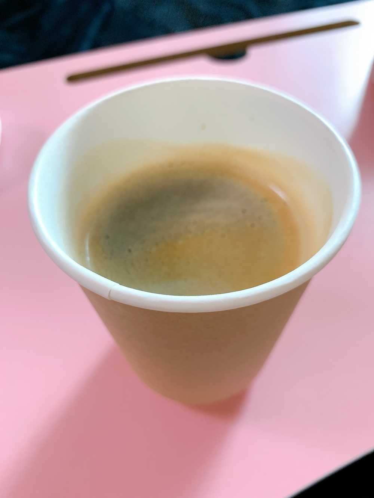

こんにちは🌞
ひいだよ🍓

今日もめーーーーっちゃ寒い😵❄️
また冬が戻ってきた感じだよ。。。
なので今日も
温かいコーヒーを入れて飲みました☕️
じゃあ質問タイムやりますね😆
Q. どうぶつの森の島の名前はなんですか？？
A. 明日のラジオで発表します📻笑
期待しててください〜😇
Q. ジェットコースターと
お化け屋敷どっちが得意ですか？？
A. 断然ジェットコースター🎢
ジェットコースターは怖い瞬間が
だいたい予想できるけど
お化け屋敷は急に驚かせてくるから
心臓に悪い👻
Q. メイクするのにどれくらい時間かけてる？
A. 40分くらいかな…🤔
余裕もって1時間！！！
Q. ラーメンは何味が1番好きですか！？
A. ラーメンあんまり食べないけど強いていうなら味噌かなあ〜！！
みんなたくさん質問してくれたので
またやりますね🤗
ではまたっ
오늘도 너무 춥네요😵
쌀쌀해😵
감기 조심해요ㅠㅠ
자!! 질문타임⏰
Q. 과일/야채 vs 고기/생선 중에 어느 쪽이 더 좋아요??
A. 과일보다 야채!!!
고기랑 생선이라면.... 고기🍖
근데 회도 너무 좋아해서..🐟
회라면 광어랑 도미, 연어도 좋아용🥰
Q. 날씨가 좋아지면 가고 싶은곳?
1. 한강!
2. 바다!
3. 산!
A. 1번!!
한강에서 맛있는거 먹고 싶어요🥺
요즘은 밖에 못 나가지만
나중에 멤버들이랑 가고싶어요!!!
Q. 토미가 좋아하는 한국 편의점 간식 BEST 5 궁금해요👀
A. 고르는게 힘들었어요ㅠㅠㅠ
1위: 버터와플
2위: 참ing 치즈맛
3위: 뽀또
4위: 마가렛트
5위: 와사비맛 아몬드
초콜릿 많이 먹지 않아요🍫
저는 쿠키를 좋아합니다🍪
Q. 히짱이 항상 자기 전에 무조건 해야하는 것은 뭐야?
A. 일기 쓰기📚
그리고 샤워 🚿 ㅋㅋㅋ
Q. 요즘 코코넛커피가 맛있다는데...🤔
A. 맞아요!!!
저번에 혜원언니가 시키는거 저도 먹어봤는데 생각보다 맛있었어요🥺
저는 코코넛은 별로 좋아하지 않지만 맛있었어요!!!
커피맛은 하나도 안 나😳
그래서 커피를 못 마시는 분들도 마실 수 있을 것 같아용☕️💕
멋있었지만 그래도 역시 저는 그냥 커피를 좋아합니다ㅎ
ばいばーい👋🏻
ひいまる🥟